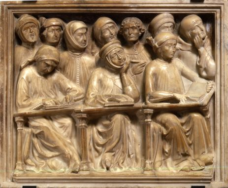

Dwarf Scroll I

The most significant part of the museum is made up mainly of the numerous testimonies of Medieval Bologna starting with the ancient early-Medieval 7th-9th century artefacts. Another important section is dedicated to works by some the most important artists active in Bologna during the 15th and 16th centuries, including Giambologna’s famous Neptune model.